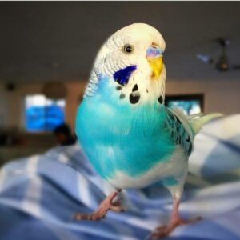
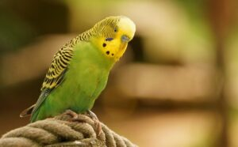
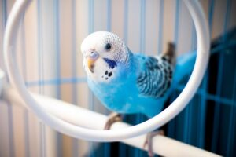
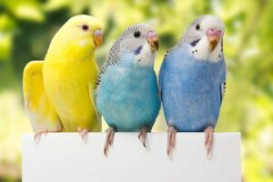
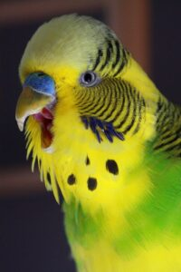

مرغ عشق پرنده ای سخنگو و شیطون هست و اگر جایی باشه صدای مرغ عشق توی اون خونه حتما طنین انداز میشه. حتما براتون پیش اومده که ببنید یه مرغ عشق توی حالتهای مختلف صداهای مختلفی از خودش دربیاره، با شادی و خوشحالی از یه طرف به طرف دیگه بپره و جیک و جیک کنه، زیر لبش یه چیزایی رو زمزمه کنه، یا گاهی صدای شکستن چیزی رو با نوکش در بیاره. شاید برای خیلیها این سوال پیش بیاد که صداهای مختلفی که مرغ عشق در میاره معنی خاصی داره؟

سوت زدن و صدای مرغ عشق خوشحال
تک جیک بلند از رایجترین صدایی هست که از مرغعشقها شنیده میشه. این صدا به این معنیه که پرندهی شما از زندگیی که داره راضی و خوشحاله. این صدا کمک میکنه که مرغ عشق با گلهی خودش ارتباط برقرار کنه و به بقیهی دوستاش بگه که همه چیز خوب و عالیه. علاوه بر این میتونه به این معنی هم باشه که “کسی نگران نباشه، من اینجااام! ”
گاهی پیش میاد که ما آدمها دوست داریم یک بند حرف بزنیم حتی وقتی حرف خاصی برای زدن نداریم یا اصلا کسی پیشمون نیست که باهاش حرف بزنیم. توی این شرایط گاهی با خودمون حرف میزنیم. این حالت یکمی شبیه این صدایی هست که مرغعشقها پشت سر هم از خودشون درمیارن.
نکته مهم اینه که پرندهها هم شخصیتهای متفاوتی دارن و بعضیهاشون دوست دارن که شنونده داشته باشن و شادیشون رو با صاحبشون شریک میشن و بعضیشون در حضور صاحبشون یا غریبهها سکوت رو تریجح میدن.
صدای جیک جیک کردن عصبی مرغ عشق
جیک جیک کردن یه صدای همه کاره محسوب میشه. جیک جیک کردن میتونه به معنی جلب توجه کردن، یا مطلع کردن شما از این موضوع باشه که آب یا غداش تموم شده.
جیک جیک و سوت پیوسته مرغ عشق
اگه جیک جیک کردن مرغ عشقتون حالت پیوستهای پیدا کنه، به این معنی هستش که هیجان زده شده. علتش میتونه صدای پرندههایی باشه که از بیرون از خونه میشنوه. یا دوست داره توجه همنشینش رو به خودش جلب کنه. حالا این همنشین و دوست ممکنه جفتش باشه ( اگه جفتی داره ) یا خود شما باشید. یه احتمال دیگه هم وجود داره که این صدا رو به نشونهی خطر داره از خودش در میاره که اگه به همین علت باشه و خطر رفع نشه، تبدیل به جیغ میشه.

صدای جیغ کشیدن مرغ عشق
این صدایی هست که هیچکس از شنیدنش خوشحال نمیشه؛ نه شما و نه بقیهی مرغعشقهایی که دارید. این صدا به این معنیه که یه چیزی درست نیست. پرندهای که جیغ میکشه از چیزی ترسیده و وحشت زده هستش، آسیب دیده و یا حضور یه شکارچی رو حس کرده ( ممکنه این حس کاملا خیالی باشه). البته این احتمال هم وجود داره که از دست شما عصبانی باشه چون برای مثال یادتون رفته ظرف غذاش رو پر کنید. گاهی هم میتونه تاثیر هورمونها روی مرغ عشقتون باشه که در این حال به زودی آروم میشه.
پرندههای ماده وقتی که آمادهی جفتگیری هستن کمی زود رنج و عصبی میشن و به هر بهانهای شروع به جیغ زدن میکنن.
وقتی مرغ عشقم جیغ میکشه چطوری آرومش کنم؟
خب شنیدن صدای شما توی مرحلهی اول میتونه باعث آرامشش بشه. اگه دیدین پرهاش ور به بدنش چسبونده به این معنیه که خیلی ترسیده. توی این شرای میتونین با یه ملحفه قفسش رو بپوشونین تا احساس امنیت بیشتری پیدا کنه. توی این فرصت بگردید و علت ترس و وحشتش رو پیدا کنید. موارد زیر میتونین از چیزهایی باشن که باعث وحشت مرغ عشقتون شدن:
- سر و صدا
- دود
- حیوونهای خونگی دیگه
- بچههای شیطون

صدای زمزمه کردن مرغ عشق
زمزمه کردن مرغ عشق هم نشونهای از شادی و حال خوب مرغ عشقتونه. شاید براتون جالب باشه که مرغ عشقها هم بر خلاف باور عمومی میتونن حرف بزنن و تقلید صدا کنن. اگه به مرغ عشقتون آموزش داده باشید که حرف بزنه، توی این حالت میتونین بشنوین کلمه و جملههایی که بلده رو هم آروم با خودش تکرار میکنه. مرغ عشقها معمولا وقتی میخوان زمزمه کنن یه جای ثابت مینشینن و پرهاشون رو باد میکنن. (مطلب مرتبط: آموزش حرف زدن به مرغ عشق)
صدای مرغ عشق نر برای جلب توجه مادهها
اگه مرغ عشقتون نر هست، برای ابراز علاقه به مرغ عشقهای ماده هم همین حالت رو پیدا میکنه.
اگه مرغ عشق نرتون جفت نداره و به طور کلی تنها نگهش میدارید ممکنه با این صحنه مواجه شید که جلوی آینه نشسته و زمزمه میکنه چون نیاز داره که توسط مرغ عشقهای دیگه مورد توجه قرار بگیره.
این ابراز عشق معمولا با موهای سیخ شده و حرکت سر همراه میشه.
صدای خواندن یا چهچه زدن مرغ عشق
خواندن مرغ عشقها نشونهی خیلی خوبیه به این معنی که شاد و سالم هستن. اگه بیشتر از یه مرغ عشق دارین دسته جمعی خوندن مرغ عشقهاتون برای برقراری ارتباط با همدیگه و اطمینان دادن به هم دیگه اس که همه چی عالیه و زندگی خیلی خوب پیش میره. مرغ عشقها از دسته جمعی چهچه زدن خیلی لذت میبرن.

معنی صدای غرغر کردن مرغ عشق
مرغ عشق هم مثل بقیهی حیوانات قلمرو و فضای شخصی خودش رو لازم داره و اگه حس کنه قلمروش به وسیلهی بقیه مرغ عشقها مورد تجاوز واقع شده صدایی شبیه غرغر از خودش خارج میکنه.
معمولا زمانی که در حال لونه سازی هستن این صدا بیشتر ازشون شنیده میشه. البته یادمون باشه این صدا به این معنیه که اون چیز یا کسی که قلمروشون رو تهدید کرده، به اندازه ی کافی باعث تحریکشون نشده و فقط اعصابشون رو بهم ریخته. اگه این صدا رو زیاد میشنوید و بیشتر از یک مرغ عشق دارید شاید زمان مناسب برای بزرگ کردن قفس پرندههاتون رسیده. چون ظاهرا فضای کافی برای زندگی کردن بدون اینکه مزاحم همدیگه باشن رو ندارن.

صدای شکستن پوست تخمه (تق تق کردن)
مرغ عشق وقتی صدای شکستن پوست تخمه میده در واقع در حال غذا خوردن نیست. این صدا معادل صدای خرخر گربه هست که به معنی بینهایت راضی بودن از شرایط و آماده ی چرت عصرونه شدن هستش.
صدای مرغ عشق سخنگو دیگه شامل چه چیزایی میشه؟
مرغ عشقها صداهای زیادی میتونن تولید کنن. صداهای موزیکال یا غیر موزیکال. معمولا توی یه بازه زمانی خاص به یه صدای خاص که بیشتر دوستش دارن پیله میکنن و بیشتر همون صدا ازشون شنیده میشه.
این پرندهها قابلیت تقلید صدا و حرف زدن دارن و گاهی از صداهای محیط دور و برشون مثل تلفن، آهنگی که شما گوش میدین، صدای حیوونهای دیگهای که توی خوتون هستن، ماشینهای توی کوچه ایده میگیرن و همون صداها رو با صدای خودشون تلفیق میکنن. بعضی هاشون هم توی صدا درست کردن از خودشون خلاقترن.
اگه دوست دارین موقع خرید مرغ عشقی رو انتخاب کنین که راحتتر بتونین بهش حرف زدن یاد بدین مقاله جامع مرغ عشق رو حتما مطالعه کنین.
آیا این مقاله براتون مفید بود؟
اشتراک گذاری نظراتتون درقسمت نظرات به ما دلگرمی میده.

سلام وقت بخیر من یه جفت مرغ عشق دارم و یه ماهه پیشم هستن و فکر میکنم سه ماهه باشن چندتا سوال دارم ممنون میشم جواب بدید.
بعضی وقتا ماده و نر باهم دیگه دعوا میکنن و هم رو میزنن یا مثلا ماده یا نر اون یکی رو از تاب پرت میکنه پایین ولی بعضی وقتا نوک به نوک هم میشن و به هم غذا میدن عادی هم رو بزنن؟؟؟
مرغ عشقام هرروز یکی دو ساعت از قفس بیرون میان و خودشون میرن توی قفس و تازه یاد گرفتن که از دستم غذا بخورن بیرون قفس ولی بلد نیستم چجوری بهشون یاد بدم بیرون قفس روی انگشتمم بیان ممنون میشم راهنمایی کنید
توی قفس نر روی دستم میاد ولی زو میپره جای دیگه و از دستم غذا میخوره و میزاره نازشون کنم ولی مادهه فقط از دستم غذا میخوره ولیخیلی گاز میگیره
چیکار کنم دیگه گاز نگیره و روی دستم بیاد مثل نره؟؟؟؟
در ضمن خیلی خیلی ممنون از سایت خوبتون🌺🌺
سلام الی جان،
اگه فقط بعضی وقتا درگیر میشن و خیلی همو اذیت نمیکنن ایرادی نداره بخاطر اینه که جنس ماده در اونا به نر غالبه، ترجیحا ظرف آبو غذا برای هرکدوم موجود باشه. اما اگه درگیری داشت باعث آسیب میشد لازمه موقتی داخل قفسشون حائل حصارمانند بذارین که ارتباط داشته باشن ولی نزدیک هم نشن.
وقتی مرغ عشق مادتون گاز میگیره دیگه کاریش نداشته باشین که متوجه بشه کار درستی نکرده، درعین حال وقتی خوب رفتار میکنه هم بهش تشویقی بدین.
برای اینکه روی انگشتتون بیان پیشنهاد میکنم مورد آخر این مقاله رو مطالعه کنین:
راهنمای کامل نگهداری از مرغ عشق (غذای مرغ عشق، دستی کردن مرغ عشق، خرید مرغ عشق و …)
سلام …..اگه به مرغ عشق شادونه بدی ضرر داره
و از کجا بفهمم بالغ شده یا نه؟
سلام علیرضای عزیز،
خیر ضرری نداره اگه درکنارش مواد مغذی دیگه مثل پلت، میوه، سبزیجات و کمی پروتئین حیوانی مثل تخم مرغ پخته هم باشه.
خیلی دقیق نمیشه سنش رو مشخص کرد، حدودی بخوام بگم نابالغین چشمای تیره دارن، پرهای اطراف نوک و زیر گردن کم پشته، پاهای نرمی دارن و توانایی خوردن دانه های سفتو ندارن. حدود ۳۰ روزگی پرهای پروازیشون درمیاد و حدود ۴۰-۳۰ روزگی از لحاظ تغذیه و نظافت مستقل میشن. بلوغ جنسیشونم ۹-۶ ماهگی هست.
منظورم جوجه مرغ عشق سوالم هم خیلی واسم مهمه اگه میشه زود جواب بدین ممنون
سلام آیناز جان،
سوالی از شما ثبت نشده اگه امکانش رو دارین مجددا کامنت بذارین که جوابتونو بدم.
سلام ببخشید مرغ عشق نر من هی میره تو لونه ای که براش گذاشتیم و بیرون نمیاد علتش چیه ؟
ماده هه هم میرفت تو لونه اما وقتی صدای مرغ عشق میزاشتیم میود بیرون اما مرغ عشق نر نه چیکار کنم بیاد بیرون
طبیعیه ؟
سه ماهشونه
سلام و خسته نباشید من یه مرغ عشق نر خریدم بعد از یک ماه یه ماده خریدم الان دو هفته دارم شون چرا با هم دیگه دوست نمیشن و همدیگر رو بوس نمی کنن مرغ عشق نر کوچک تر ولی مادش بالغه
سلام ابوالفضل عزیز،
یه مقدار زمان میبره که بهم عادت کنن. نابالغ بودن پرنده ی نرتون هم بی تاثیر نیست.
سلام من تازگی ها یه جفت مرغ عشق خریدمو میدونم که یکی نر و اون یکی ماده هست. ماده هه خییلی نره رو اذیت میکنه و میترسوندش.نره هم خیلی ترسو شده و فقط داره از ماده هه فرار میکنه. جیغ هم زیاد میکشن.جوجه هم ندارن تخم هم نزاشتن ولی نمیدونم که ماده هه حامله هست یا نه. اصلن هم همدیگرو بوس نمیکنن.اصلن هم داخل آشیانشون نمیرن بااینکه چیزی توش نیست.
سلام مبینا جان،
باتوجه به علائمی که گفتین احتمال زیاد پرنده هاتون باهم جفت نشدن ولی محض احتیاط شکم ماده رو لمس کنین اگه تورم داشت (حالا چه سفت چه نرم) بهتره که به متخصص پرندگان مراجعه کنین.
توی باجریگارها هم جنس ماده معمولا غالب هست و ممکنه با نر درگیری داشته باشن. میتونین ظرف آبو غذاشونو جدا و با فاصله از هم بذارین. اگه همچنان درگیری داشتن موقتا داخل قفس یه حائل حصار مانند بذارین که باهم درارتباط باشن ولی نزدیک هم نباشن.
دوباره سلام به شکمش دست زدم تورم داشت که سفت هم بود حس میکنم.ینی جوجه داره؟؟؟ باید چیکار کنم؟ تو آشیانشون پنبه بزارم ؟ اخه اصلن توش نمیرن.
سلام مبینا جان،
اگه تورم مشخص داره شکمش ولی مطمئن نیستین سفته یا نرم به هرحال باید به متخصص پرندگان مراجعه کنین که براساس تشخیصی که از معاینات میدن بتونن اقدام درمانی مناسبو انجام بدن. معمولا وقتی پرنده تو دوره ی تولیدمثلی باشه و جفتگیری کرده باشه، شروع میکنن لونه رو چیدن و رسیدن بهش، اگه هم ماده دچار تخم ماندگی شده باشه شکمش تورم مشخص سفت مانندی داره که باعث میشه مدام زور بزنه، کم غذا بشه، نفس کشیدنش سخت بشه، خودشو پف بده و تعادل نداشته باشه. به هرحال برای پرورش باجریگار نکاتیو لازمه رعایت کنین که بطور کامل تو این کتاب توضیح داده شده:
راهنمای پرورش مرغ عشق
سلام من ۲ مرغ عشق دارم، یکی نر و یکی ماده و یکی نر. ولی آب نمیخورن. و مرغ عشق ماده چشمانش را میبندد و کص میکنه علتش چیه
سلام من دیروز یه جفت مرغ عشق با تهجیزات کامل خریدم و دو تا اسباب بتزی براشون گذاشتم اما هیچکاری نمیکردن و اصلا آواز نمیخوندن و غذا نمیخوردن اما وقتی گذاشتم تو تراسمون قشنگ سر حال شدن و آواز خوندن و پرواز میکردن و بازی میکردن و …. خیلی هم بالشون و باز میکنن و با نوک میخارونن یا با پاهاشون این طبیعیه ؟
سلام دوست عزیز،
چون تازه واردن یه مقدار طول میکشه به محیط خونه و حضور شما عادت کنن.
بله پرنده ها در طی روز عادت دارن خودشون و پرهاشونو تمیز کنن. اگه احساس کردین زیاد از حد دارن خودشونو تمیز میکنن، پرهاشون غیرعادی شده یا ریخته یا هر تغییر غیرعادی دیگه دیدین لازمه که بیشتر بررسی بشه.
خب هنوز عادت نکردن به جای جدید
سلام ببخشید مرغ عشق های من ۲ تا هستن بالغ نیستن
روزانه چندبار بالاشونو باز میکنند و بعد با پاهایشان بال شان رومیکشن
سلام بهراد عزیز،
احتمالا دارن خستگی درمیکنن و بال هاشونو تمیز میکنن. اگه علائم غیرعادی دیگه دیدین بعد از انجام مراحل ثبت مشاوره آنلاین باهامون درمیون بذارین:
با مشاوره دامپزشکی آنلاین کنار شما هستیم (سوال مستقیم و تخصصی از دامپزشکان پت پرس)
سلام من یه مرغ عشق ۷ ماهه خریدم دست آموزه ولی صدا نداره فقط چند بار یه صدا هایی درآورده می خواستم ببینم طبیعیه تو مغازه هم ساکت بود ولی هم غذاست میخوره هم آب میخوام ببینم مشکل نداره
سلام پارسای عزیز،
چون تازه گرفتینش ممکنه هنوز به محیط جدید و حضور شما عادت نکرده باشه ولی یکم بگذره به اصطلاح یخش آب بشه. اینم بگم که از بین پرنده های آوازخون و سخنگو تعدادیشون هستن که برخلاف اکثریت زیاد علاقه ای به صحبت کردن و آواز خوندن ندارن و لزوما نشونه ی بیماری نیست. اگه درکنارش علائم دیگه مثل بیحالی، بی اشتهایی، پف دادن پر و … دیده بشه اونموقع لازمه که بررسی بشه.
سلام ببخشید مرغ عشقی های من خودشونو میخارونن طبیعیه؟؟؟؟
سلام کوروش عزیز،
پرنده ها یه رفتار تمیز کردن دارن که در طول روز انجامش میدن ممکنه به اشتباه فکر کردین خودشونو میخارونن. اگه علائم دیگه ای نیست که نشوندهنده ی کلافگی، پر ریختگی یا کندن پر توسط خودشون باشه میشه گفت طبیعیه. شاید هم محیطشون رطوبت کافی نداره یا امکانات حمام براشون فراهم نیستو پوستشون خشک شده.
سلام با ارض تشکر از راهنمایی قبلیتون تونستم دونخورش کنم
ولی فقط و فقط ارزن میخوره اینم روزی یکبار از ۴ وعده سریلاکش کردم ۳ وعده ولی چون چیزی نمیخورد گرسنش بود کردم ۴ وعده میخوام بهش دون میوه بدم تا ویتامین اون کم نشه
هیچ چیز نمی خوره به نظر شما چه کار کنم هیچ چیز نمی خوره نه دون ارزن…. میوه نمیخوره نه هویج حتی تخم مرغ رنده شده ام نمیخوره فقط و فقط سرلاک چه کار باید بکنم
سلام حمیدرضای عزیز،
ارزن دونه ی چربیه و مصرف تنهایی و زیادش توصیه نمیشه. بهتره که به مصرف پلت عادتش بدین. مخلوط کردن سرلاکش با رژیمی که باید بهش عادت کنه رو امتحان کنین، یعنی پلت خیس شده رو به همراه یه مقدار میوه و تخم مرغ رنده شده با سرلاکش مخلوط میکنین و براش میذارین. به مرور از میزان سرلاکش کم میکنین و رژیم جدیدو بیشتر میکنین تا درنهایت عادت کنه به رژیم جدید.
برای راهنمایی بیشتر از برنامه ی غذایی و موادمورد نیاز رژیم غذایی جدیدش پیشنهاد میکنم مراحل ثبت مشاوره آنلاینو انجام بدین تا بتونیم کامل راهنماییتون کنیم:
مشاوره دامپزشکی آنلاین حیوانات خانگی- سوال مستقیم و تخصصی از دامپزشک پت پرس
تو پیام قبلی یادم رفت بگم تو اینترنت گشتم چنتا صدای مرغ عشق پیدا کردم واسه مرغ عشقام می گیرم این ور اون ور می پرن و آواز می خونن این آهنگا واسشون خوبه یا دیگه براشون آهنگ نزارم؟؟